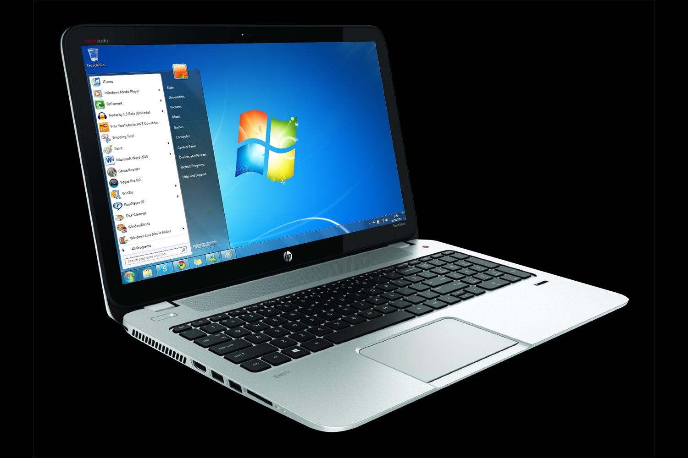

Mac | Windows | Repair | Sales
Founder & Lead Technician
M.S. Mac Solution provides professional repair and technical support services for Mac and Windows systems. With years of hands-on experience in hardware repair, chip-level diagnostics, and software solutions, we focus on reliable service, transparent pricing, and customer satisfaction.
We specialize in MacBook repair, Windows troubleshooting, motherboard-level repair, and complete system optimization. Our goal is to deliver fast, dependable, and affordable IT solutions for individuals and businesses.

Expert diagnosis and repair for all MacBook models including hardware, macOS, and performance issues.

Complete troubleshooting and repair services for Windows laptops and desktops.

Advanced motherboard-level repair for power faults, short circuits, and component failures.

Operating system installation, updates, drivers, and performance optimization.
Professional Apple Laptop

High performance Windows Laptop
"My MacBook wouldn't turn on after a spill. They fixed the logic board in two days when Apple wanted me to buy a new one."
"Honest pricing and quick turnaround on my Windows laptop's screen replacement. Highly recommend for chip-level repairs."
"Recovered three years of client data from a drive I thought was dead. Professional and transparent throughout."